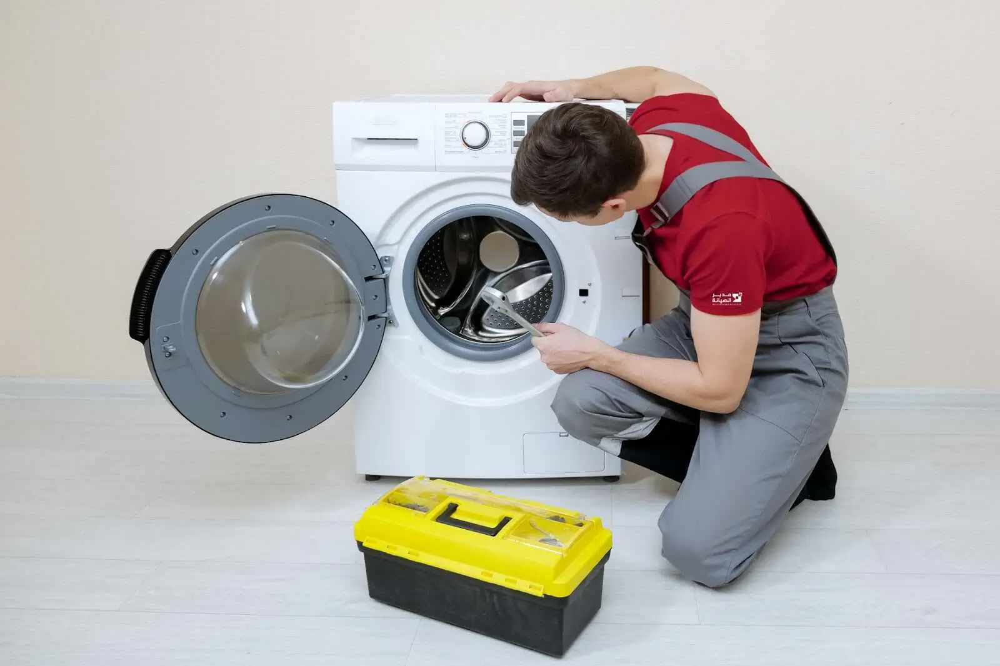

الدليل الشامل لصيانة الغسالات
أشهر أعطال الغسالات الأوتوماتيك، طرق العناية والتنظيف، رموز الأعطال، ومتى يكون تدخل الفني هو الحل الأنسب.
الغسالة من أكثر الأجهزة استخدامًا في المنزل، ولذلك قد يكون توقفها المفاجئ مزعجًا جدًا. لكن كثيرًا من المشكلات تبدأ بعلامات بسيطة يمكن ملاحظتها مبكرًا، مثل ضعف التصريف أو زيادة الاهتزاز أو ظهور رائحة غير معتادة.
في هذا الدليل من أرشيف التوكيل للصيانة نستعرض أشهر أعطال الغسالات الأوتوماتيك، خطوات العناية والتنظيف، وكيف تعرف متى تكون المشكلة بسيطة ومتى تحتاج إلى فني متخصص.
الغسالة مش شغالة زي الأول؟
بدل ما تستمر المشكلة وتؤثر على أجزاء أخرى من الجهاز، ابدأ بتحديد الأعراض واطلب الفحص المناسب. التوكيل للصيانة يوفر خدمة صيانة منزلية، كما يمكنك الاستفسار عن إمكانية إحضار الجهاز إلى مقر الشركة.
احجز أو استفسر عن العطلأشهر 10 أعطال تواجه الغسالات الأوتوماتيك
- الغسالة لا تعمل: قد تكون المشكلة في مصدر الكهرباء أو إغلاق الباب أو أحد مكونات التشغيل.
- الغسالة لا تسحب المياه: افحص مصدر المياه وخرطوم الدخول، فقد يكون هناك التواء أو انسداد.
- تسريب المياه: قد يرتبط بخرطوم، جلدة الباب، الوصلات أو أحد المكونات الداخلية.
- الحلة لا تدور: قد يكون هناك خلل في نظام الحركة أو المحرك أو أحد المكونات المرتبطة بالدوران.
- المياه لا يتم تصريفها: من الأسباب المحتملة انسداد الفلتر أو خرطوم الصرف أو مضخة التصريف.
- اهتزاز شديد: الحمولة غير المتوازنة أو عدم استواء الأرضية قد يسببان اهتزازًا زائدًا.
- تتوقف في منتصف البرنامج: قد يكون السبب مرتبطًا بالتغذية الكهربائية أو لوحة التحكم أو حساس من الحساسات.
- الباب لا يفتح: في بعض الحالات يكون وجود مياه داخل الحلة أو خلل قفل الباب سببًا في بقاء الباب مغلقًا.
- الملابس لا تنظف جيدًا: قد يرتبط ذلك بكمية المنظف، اختيار البرنامج، أو مشكلة في أحد أنظمة الغسالة.
- رائحة غير مستحبة: تراكم الرطوبة وبقايا المنظف والأوساخ داخل الحوض أو حول الجلدة قد يؤدي إلى ظهور الروائح.
تنظيف الغسالة جزء أساسي من الصيانة
تنظيف الغسالة لا يتعلق بالمظهر فقط؛ فالتراكمات داخل درج المسحوق والفلتر وحول جلدة الباب قد تؤثر على الرائحة والتصريف وجودة الغسيل.
تنظيف الفلتر
افصل الغسالة عن الكهرباء قبل التعامل مع الفلتر. افتح مكان الفلتر وفق دليل موديل جهازك، وضع منشفة أو وعاء مناسب لأي مياه متبقية، ثم أزل الوبر والأجسام الغريبة ونظف الفلتر وأعد تركيبه بإحكام.
العناية بجلدة الباب ودرج المسحوق
امسح جلدة الباب بعد الغسيل لإزالة المياه وبقايا الأوساخ، ونظف درج المسحوق بصورة دورية لمنع تراكم المنظفات. وترك الباب مفتوحًا قليلًا بعد انتهاء الدورة يساعد على تهوية الحوض وتقليل الرطوبة.
رموز أعطال الغسالة: ماذا تعني؟
رموز الأعطال تساعد في تحديد اتجاه المشكلة، لكن الرمز نفسه قد يختلف معناه من ماركة إلى أخرى وحتى بين موديلات الشركة الواحدة. لذلك لا تعتمد على قائمة رموز عامة فقط؛ راجع دليل المستخدم الخاص بموديل الغسالة.
ومن الأمثلة التي قد تظهر في بعض الموديلات رموز مرتبطة بسحب المياه أو التصريف أو قفل الباب. إذا استمر الرمز بعد الفحوصات البسيطة المسموح بها في دليل الجهاز، فالأفضل طلب تشخيص فني.
صيانة الغسالات الفوق أوتوماتيك
الغسالات الفوق أوتوماتيك تختلف في تصميمها وطريقة الوصول إلى بعض المكونات عن الغسالات ذات التحميل الأمامي، ولذلك تختلف بعض إجراءات التنظيف والصيانة بينها.
الأهم هو الالتزام بتعليمات الشركة الخاصة بالموديل فيما يتعلق بنوع المنظف، كمية الغسيل، برامج التشغيل والتنظيف الدوري. لا تفترض أن تعليمات غسالة معينة تنطبق على كل الأجهزة.
أدوات بسيطة قد تحتاجها في العناية المنزلية
- مفكات مناسبة: للاستخدام في المهام المسموح بها حسب دليل الجهاز.
- كماشة: لبعض أعمال الإمساك البسيطة، وليس لفك مكونات كهربائية دون خبرة.
- دلو أو منشفة: للتعامل مع المياه المتبقية عند تنظيف الفلتر.
- فرشاة صغيرة: لتنظيف درج المسحوق والمناطق التي تتجمع فيها الرواسب.
- مصباح: لرؤية الأماكن الضيقة عند الفحص الخارجي.
متى تحتاج إلى فني غسالات محترف؟
إذا كانت المشكلة تتعلق بتسريب كبير، رائحة احتراق، دخان، شرر، عطل كهربائي، لوحة تحكم، صوت ميكانيكي قوي، أو عطل متكرر لا يختفي بعد الفحوصات البسيطة، فمن الأفضل عدم الاستمرار في التجربة العشوائية.
التشخيص الصحيح لا يهدف فقط إلى إعادة تشغيل الغسالة، بل إلى تحديد سبب المشكلة واختيار الإصلاح المناسب وتقليل احتمال عودة العطل.
الغسالة وقفت؟ خلّي التشخيص يبدأ صح
فريق التوكيل للصيانة متخصص في صيانة وإصلاح الأجهزة المنزلية، مع خبرة في التعامل مع موديلات متعددة من الغسالات، وتوفير قطع غيار أصلية عند الحاجة ووفق توافر القطعة المناسبة للموديل، وضمان على الخدمة والقطع وفق سياسة الشركة.
احجز صيانة الآنأسئلة شائعة
ما العمر الافتراضي للغسالة الأوتوماتيك؟
لا يوجد رقم واحد ينطبق على كل الغسالات. العمر يتأثر بجودة التصنيع، عدد دورات التشغيل، طريقة الاستخدام، الصيانة، والظروف المحيطة بالجهاز. لذلك حالة الغسالة الفعلية أهم من الاعتماد على رقم ثابت.
كيف أحمي الغسالة من مشاكل الكهرباء؟
استخدم مصدر كهرباء مناسبًا للجهاز وتجنب التوصيلات غير الآمنة. وإذا كان التيار في المكان غير مستقر، ناقش مع فني كهرباء مؤهل وسيلة الحماية المناسبة لجهازك.
هل نوع مسحوق الغسيل يؤثر على الغسالة؟
نعم، يجب استخدام المنظف والكمية الموصى بهما لموديل الغسالة. استخدام منتج غير مناسب أو كمية زائدة قد يؤدي إلى رغوة أو رواسب ويؤثر على أداء الغسيل.
الغسالة تهتز بشدة أثناء العصر، ماذا أفعل؟
أوقف الدورة وتأكد من توزيع الملابس وعدم تحميل الغسالة فوق سعتها، وتحقق من استواء الجهاز. إذا استمر الاهتزاز القوي أو صاحبه صوت غير طبيعي، اطلب فحصًا فنيًا.
هل أستطيع إصلاح الغسالة بنفسي؟
يمكن تنفيذ أعمال العناية البسيطة التي يوضحها دليل الجهاز، مثل تنظيف الفلتر أو درج المسحوق. أما الأعطال الكهربائية والميكانيكية الداخلية فمن الأفضل أن يتعامل معها فني متخصص.
احجز صيانة غسالتك
زيارة منزلية أو استفسار عن إمكانية إحضار الجهاز إلى مقر التوكيل للصيانة. أرسل نوع الغسالة والموديل ووصف العطل لتحديد الخطوة المناسبة.
ابدأ طلب الصيانةهل تواجه مشكلة أو عطلاً في جهازك؟
تواصل مع فريق "التوكيل للصيانة" الآن للحصول على استشارة فنية وفحص منزلي فوري بأعلى معايير الدقة والأمان.